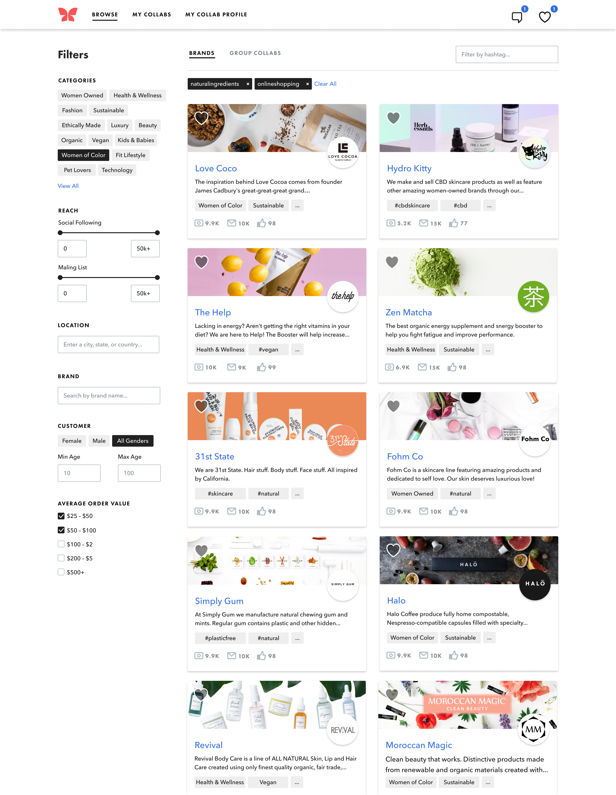
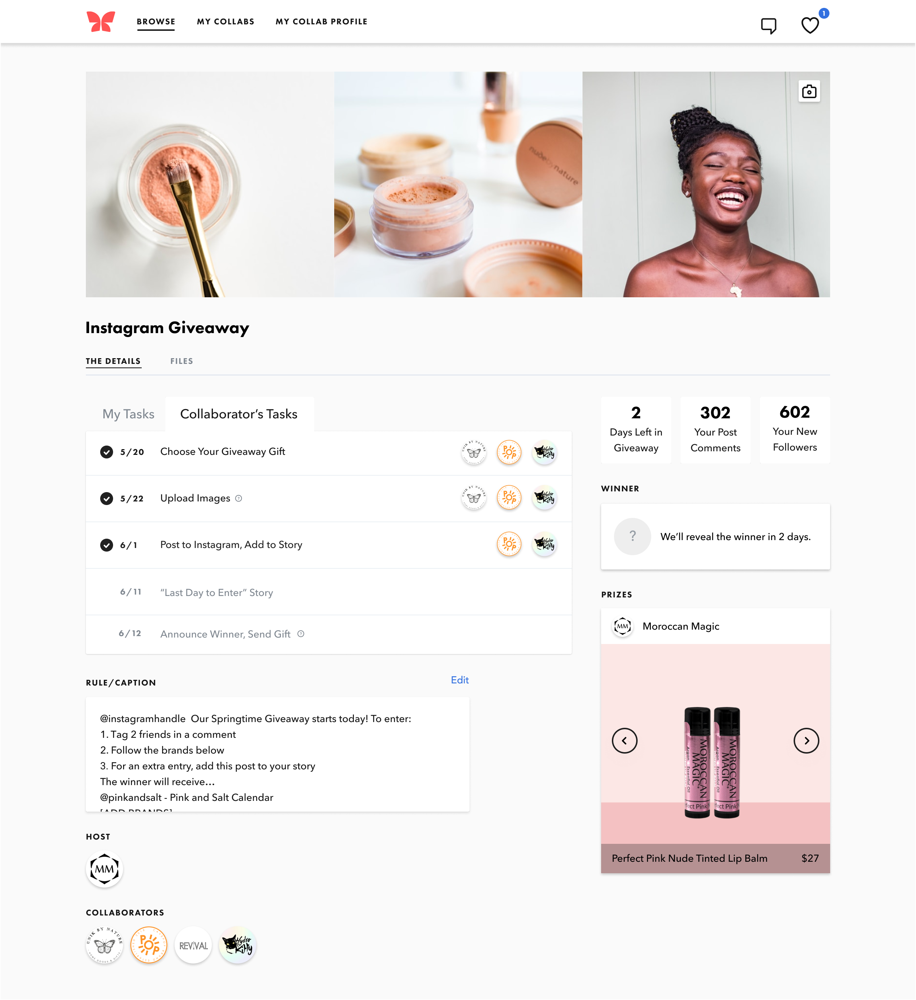
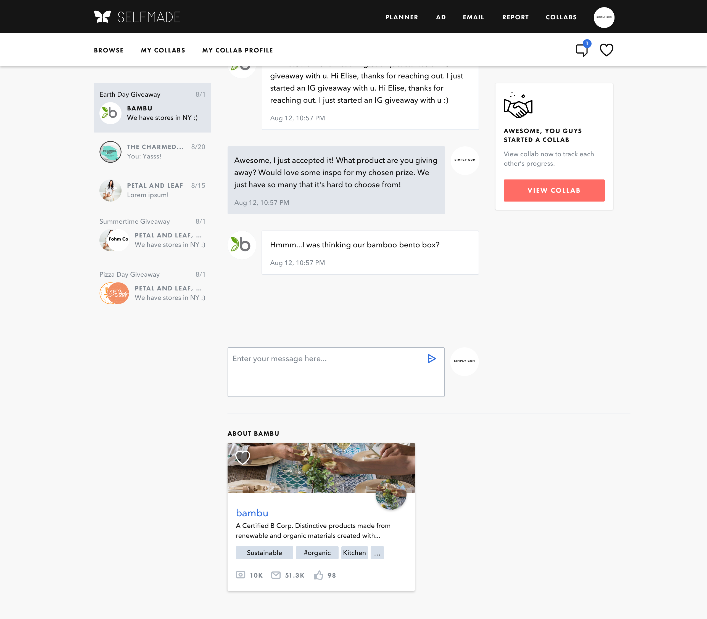
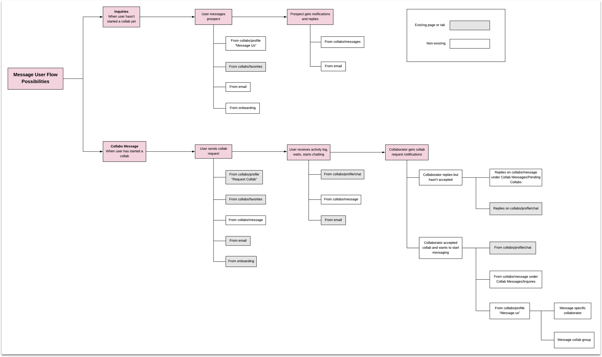
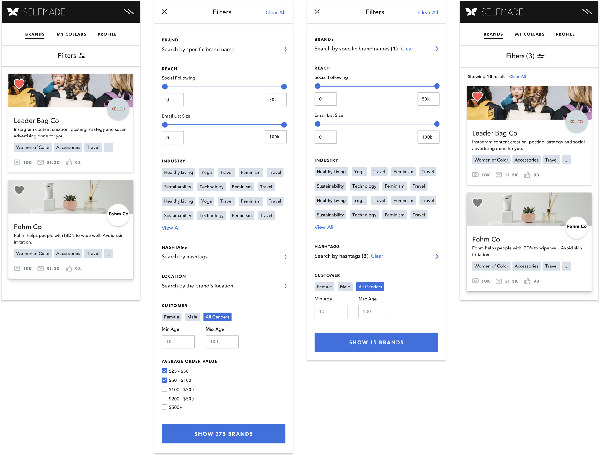

Find and collaborate with like-minded small e-commerce brands.
Marketing tool
Product designer
2019
It is hard to stand out in today’s market. Collaboration is a low-cost, creative marketing technique for brands to cross-pollinate customers and broaden their audience reach. The SelfMade team created Collabs, a free platform for small e-commerce brands to find, connect, and collaborate with one another though Instagram Giveaway, Joint Email Campaign, Pop-up Shop, etc.
I designed the messaging feature on Collabs, which enables brands to communicate pre-collab.
Collabs is a fully responsive web app. One of the first projects I worked on was redesigning the search and filter functionality on mobile.
